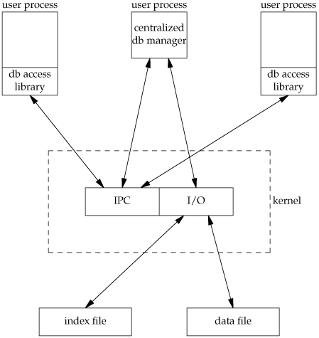

20.5. Centralized or Decentralized?Given multiple processes accessing the same database, we can implement the functions in two ways:
Database systems have been built using each of these techniques. Given adequate locking routines, the decentralized implementation is usually faster, because IPC is avoided. Figure 20.4 depicts the operation of the centralized approach. Figure 20.4. Centralized approach for database access We purposely show the IPC going through the kernel, as most forms of message passing under the UNIX System operate this way. (Shared memory, as described in Section 15.9, avoids this copying of the data.) We see with the centralized approach that a record is read by the central process and then passed to the requesting process using IPC. This is a disadvantage of this design. Note that the centralized database manager is the only process that does I/O with the database files. The centralized approach has the advantage that customer tuning of its operation may be possible. For example, we might be able to assign different priorities to different processes through the centralized process. This could affect the scheduling of I/O operations by the centralized process. With the decentralized approach, this is more difficult to do. We are usually at the mercy of the kernel's disk I/O scheduling policy and locking policy; that is, if three processes are waiting for a lock to become available, which process gets the lock next? Another advantage of the centralized approach is that recovery is easier than with the decentralized approach. All the state information is in one place in the centralized approach, so if the database processes are killed, we have only one place to look to identify the outstanding transactions we need to resolve to restore the database to a consistent state. The decentralized approach is shown in Figure 20.5. This is the design that we'll implement in this chapter. Figure 20.5. Decentralized approach for database access
The user processes that call the functions in the database library to perform I/O are considered cooperating processes, since they use byte-range locking to provide concurrent access. |